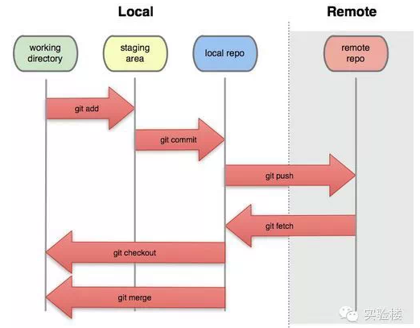
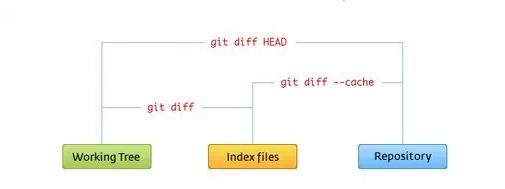

Git 工作区、暂存区和版本库
基本概念 我们先来理解下Git 工作区、暂存区和版本库概念 工作区：就是你在电脑里能看到的目录。 暂存区：英文叫stage, 或index。一般存放在 “.git目录下” 下的index文件（.git/index）中，所以我们把暂存区有时也叫作索引（index）。 * 版本库： 工作区有一个隐藏目录.git，这个不算工作区，而是Git的版本库。 下面这个图展示了工作区、版本库中的暂存区和版本库之间的关系：

图中左侧为工作区，右侧为版本库。在版本库中标记为 “index” 的区域是暂存区（stage, index），标记为 “master” 的是 master 分支所代表的目录树。
图中我们可以看出此时 “HEAD” 实际是指向 master 分支的一个”游标”。所以图示的命令中出现 HEAD 的地方可以用 master 来替换。
图中的 objects 标识的区域为 Git 的对象库，实际位于 “.git/objects” 目录下，里面包含了创建的各种对象及内容。
常见的操作
-
当对工作区修改（或新增）的文件执行 “git add” 命令时，暂存区的目录树被更新，同时工作区修改（或新增）的文件内容被写入到对象库中的一个新的对象中，而该对象的ID被记录在暂存区的文件索引中。
-
当执行提交操作（git commit）时，暂存区的目录树写到版本库（对象库）中，master 分支会做相应的更新。即 master 指向的目录树就是提交时暂存区的目录树。
-
当执行 “git reset HEAD” 命令时，暂存区的目录树会被重写，被 master 分支指向的目录树所替换，但是工作区不受影响。
-
当执行 “git rm –cached < file >” 命令时，会直接从暂存区删除文件，工作区则不做出改变。
-
当执行 “git checkout . ” 或者 “git checkout - - < file >” 命令时，会用暂存区全部或指定的文件替换工作区的文件。这个操作很危险，会清除工作区中未添加到暂存区的改动。
-
当执行 “git checkout HEAD . ” 或者 “git checkout HEAD - - < file >” 命令时，会用 HEAD 指向的 master 分支中的全部或者部分文件替换暂存区和以及工作区中的文件。 这个命令也是极具危险性的 ，因为不但会清除工作区中未提交的改动，也会清除暂存区中未提交的改
-
当执行“git checkout”时，汇总显示工作区域，暂存区与HEAD的差异，这个命令等同于“git checkout HEAD”,与第5，6差异在于一个”.”或“–”
下面2张图可以直观的帮助你理解：

